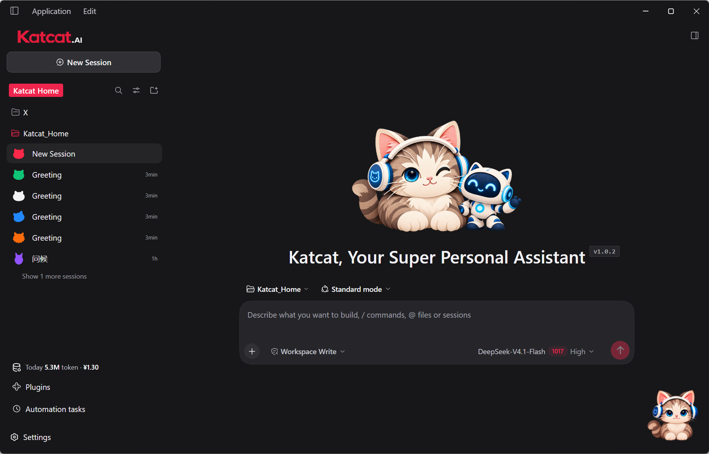

Meet Katcat.AI, your super personal assistant: a free Windows desktop agent I built on top of DeepSeek Harness.
If you mostly use AI in a browser to chat and ask questions, and would like to try turning your ideas into something real, you're welcome to give it a go.
The idea behind Katcat is simple: give people who are new to AI a comfortable starting point to explore what it can help them do.
Bring an AI assistant to your desktop
Katcat.AI is built on DeepSeek Harness (DSH-0.2.1-rc.2), with built-in and enhanced capabilities for everyday work: document processing, spreadsheet analysis, data visualization, content creation, remote connections, and automation.
I have built frequently used capabilities directly into Katcat.AI. My aim is to make it simpler and more convenient to use than the original DSH, WorkBuddy, or Doubao Work, so you can spend more time on your ideas.
The software is shared for free. You bring your own DeepSeek API key and pay the model provider for actual API usage. The steps below explain how to get a key and configure it.

A little companion while you work
Choose between light and dark themes, with a headphone-wearing cat to keep you company on your desktop.
The cat brings the charm; Katcat helps you move your work forward, one step at a time. I hope this little companion makes your first steps in creating with AI feel a little easier.

Download and install
Get the installer from the Katcat.AI download page.
The current release supports Windows 10 / 11 on x64 systems. After installing the app, you will see a welcome screen on your first launch.
If you already have a DeepSeek API key, choose "Get started", paste the key into the configuration dialog, and save it. Otherwise, follow the next section. You can also choose "Set up later" to explore the interface first. Button labels may vary with the app's language.

Get your DeepSeek API key
Open the DeepSeek API platform and sign in or create an account using the options offered there.
The Chinese login screen shown below uses a phone number and an SMS verification code. Available sign-in methods may differ by region or change over time; follow the current instructions on the platform.
Once signed in, open API keys, create a new key, and copy it.
Your API key lets Katcat access the model through your account. Keep it private: you do not need to send it to me, and it should never appear in public screenshots.

Add your key and start exploring
Return to Katcat, choose "Get started", paste your API key into the configuration dialog, and save. If you skipped the welcome screen, open Settings > Models to configure it.
Choose a workspace on the main screen: this is the folder where you keep your materials and the work you create. If prompted to select a model, choose the model you have configured. You're ready to start a conversation.
If you see an insufficient-balance message, check your balance on the DeepSeek API platform and top it up as needed. API usage and browser-based chat have separate usage allowances.
Try it out and share your feedback
I am sharing this desktop agent for free to help people who are new to AI take that first step more easily.
Suggestions are welcome, whether you are just getting started or already use AI every day. Let me know what feels confusing or doesn't work as expected.
I plan to keep maintaining and improving Katcat, with the aim of making it a super personal assistant you genuinely enjoy using.
Ready to bring your new companion to your desktop?